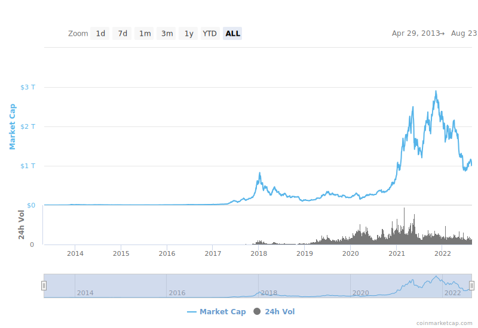

# CS 4501 ### Cryptocurrency ### Spring 2023 <p class='titlep'> </p> <div class="titlesmall"><p> <a href="http://www.cs.virginia.edu/~asb">Aaron Bloomfield</a> (aaron@virginia.edu)<br> <a href="http://github.com/aaronbloomfield/ccc">@github</a> | <a href="index.html">↑</a> | <a href="./course-introduction.html?print-pdf"><img class="print" width="20" src="../slides/images/print-icon.png" style="top:0px;vertical-align:middle;padding:0;border-radius:0"></a> </p></div> <p class='titlep'> </p> ## Course Introduction
# Contents [Motivation](#/motivation) [Course Structure and Logistics](#/course) [Honor Policy](#/honor) [Legal Issues](#/legal)
# Motivation <img src="../slides/images/logos/btc-coin-symbol.svg" class="cclogosubtitle"> <img src="../slides/images/logos/eth-coin-symbol.svg" class="cclogosubtitle">
<!-- .slide: class="right-float-img" --> ## If you bought Bitcoin... <a href='https://commons.wikimedia.org/wiki/File:One_bitcoin_sitting_atop_bundles_of_US_$100_notes.png'></a> - ...in 2010 for $0.25 per BTC - Let's say you spent $100 - You would have owned 400 BTC - That would be worth $8 million today! - (assuming a price of $21k per BTC) - That amount of growth is not likely to ever happen again... ## CS 4501 will not make you rich - It does not teach you about investing in cryptocurrency - Instead, it will focus on the technical aspects of cryptocurrency - Two rock-solid investing tips: 1. Go back in time to 2012 and buy a *lot* of Bitcoin 2. Be VERY wary of anything cryptocurrency related, as it's [full of scams](https://web3isgoinggreat.com/) <!-- .slide: class="cclogo-slide" --> ## Coins Studied - This course will primarily focus on the technical aspects of two coins / networks: - [](https://coinmarketcap.com/currencies/bitcoin/) Bitcoin (BTC, ₿): the first real viable cryptocurrency and the most valuable; ASIC mineable <br clear='all'> - [](https://coinmarketcap.com/currencies/ethereum/) Ethereum (ETH, Ξ): has significant improvements over Bitcoin with much more functionality; is (but shortly no longer) ASIC mineable - We'll also see a bunch more, but in lesser detail... <aside data-markdown class='notes'> ASIC = application-specific integrated circuit </aside>
## All the coins we'll discuss [](https://coinmarketcap.com/currencies/algorand/) [](https://coinmarketcap.com/currencies/cosmos/) [](https://coinmarketcap.com/currencies/anchorust/) [](https://coinmarketcap.com/currencies/beam/) [](https://coinmarketcap.com/currencies/bitcoin/) [](https://coinmarketcap.com/currencies/bitcoin-gold/) [](https://coinmarketcap.com/currencies/multi-collateral-dai/) [](https://coinmarketcap.com/currencies/polkadot-new/) [](https://coinmarketcap.com/currencies/ergo/) [](https://coinmarketcap.com/currencies/ethereum-classic/) [](https://coinmarketcap.com/currencies/ethereum/) [](https://coinmarketcap.com/currencies/fei-usd/) [](https://coinmarketcap.com/currencies/filecoin/) [](https://coinmarketcap.com/currencies/firo/) [](https://coinmarketcap.com/currencies/frax/) [](https://coinmarketcap.com/currencies/juno/) [](https://coinmarketcap.com/currencies/terra-luna/) [](https://coinmarketcap.com/currencies/polygon/) [](https://coinmarketcap.com/currencies/magic-internet-money/) [](https://coinmarketcap.com/currencies/maker/) [](https://coinmarketcap.com/currencies/neoxa/) [](https://coinmarketcap.com/currencies/namecoin/) [](https://coinmarketcap.com/currencies/peercoin/) [](https://coinmarketcap.com/currencies/ravencoin/) [](https://coinmarketcap.com/currencies/single-collateral-dai/) [](https://coinmarketcap.com/currencies/shiba-inu/) [](https://coinmarketcap.com/currencies/solana/) [](https://coinmarketcap.com/currencies/spell-token/) [](https://coinmarketcap.com/currencies/storj/) [](https://coinmarketcap.com/currencies/tomb/) [](https://coinmarketcap.com/currencies/tribe/) [](https://coinmarketcap.com/currencies/usd-coin/) [](https://coinmarketcap.com/currencies/tether/) [](https://coinmarketcap.com/currencies/terrausd/) [](https://coinmarketcap.com/currencies/wrapped-bitcoin/) [](https://coinmarketcap.com/currencies/weth/) [](https://coinmarketcap.com/currencies/stellar/) [](https://coinmarketcap.com/currencies/petrodollar/) [](https://coinmarketcap.com/currencies/primecoin/) [](https://coinmarketcap.com/currencies/zcash/)
## Cryptocurrency Market Cap  From [https://coinmarketcap.com/charts/](https://coinmarketcap.com/charts/) ## CC Market Cap w/o BTC <img src="../slides/images/timely/cc-market-cap-no-btc.svg" style="padding:0"> From [https://coinmarketcap.com/charts/](https://coinmarketcap.com/charts/) ## Bitcoin dominance  From [https://coinmarketcap.com/charts/](https://coinmarketcap.com/charts/)
# Course Structure and Logistics
## Instructional Staff <img src="images/introduction/aaronbloomfield.jpg" style="padding:0;margin:auto"> <p style='text-align:center'>Aaron Bloomfield</p> <p style='text-align:center'>Rice Hall, room 402<br>aaron@virginia.edu</p> ## Course resources - We are using [Canvas](https://canvas.virginia.edu/) this semester, not Collab - Contained in Canvas: landing page of links, Piazza, Gradescope, lecture videos, files download - And a link to the support requests tool - Currently, Canvas does not have anonymous feedback or site email - External course materials - Most of the course materials can be found online at <br> [https://aaronbloomfield.github.io/ccc](https://aaronbloomfield.github.io/ccc) - Or via the github repo at <br> [https://github.com/aaronbloomfield/ccc](https://github.com/aaronbloomfield/ccc) ## Contacting Us - Feel free to chat with me right after any class - Please fill out a support request instead of emailing me - Linked to from the Canvas landing page - Office hours will start next week - ~~Anonymous feedback through Canvas~~ ## Contacting You - The [daily announcements slide set](daily-announcements.html) - If you miss lecture, you are responsible for checking it! - Anything else that is "urgent" will be posted to Piazza as an instructor note - Or perhaps a Canvas announcement - VERY few notifications (possibly none!) will be sent out as a course email - How to do this is non-intuitive in Canvas - Thus, you have to check multiple places for updates: the [daily announcements slide set](daily-announcements.html), Canvas announcements, Piazza - But if you log into Piazza via Canvas, then that one action will check two of them ## Meetings - Lectures: M/W/F 10:00-10:50 in Thornton E303 - Lectures are required - There will be surprise pop quizzes and/or attendance taking in lecture - If you have to miss a lecture, there is a Google form for you to fill out - Linked to from the Canvas landing page - Please don't email me or send in a support request that you are going to miss a lecture! - These generally have to be in before class starts - Reasonable exceptions for unexpected circumstances and emergencies, of course ## Expectations - Prerequisites: CS 2150 (PDR) or CS 3100 (DSA2), with a grade of C- or higher - This is a strict pre-req! - Reason: you need three semesters of collegiate-level programming courses ## Homeworks - There will be a combination of: - Larger programming homeworks (about a dozen): the 'P' homeworks - Smaller ('S') homeworks, such as tutorials and readings (currently about half a dozen; more may be added) - Often one of each will be assigned at any given time - But their due dates will be staggered - There will also be random in-class quizzes on the readings; if you are absent that day, you get a zero - Unless it's an emergency, you can only be excused if you fill out the excuse form BEFORE lecture with a valid reason ## Homeworks - You can see them all on the [homeworks page](../hws/index.html) - Please don't start them early! - They are all going to have changes made, including some fairly significant changes - I'll have them ready a week or so before they are due - And I will clearly announce when that happens - Either in the daily announcements or on Piazza ## HW submission: Gradescope - We will be using [Gradescope](https://gradescope.com) - All assignments will be ***autograded*** - The specifications and *some* test cases will be included in the homework descriptions - Gradescope will use the same *type* of tests, but with different data - You may submit as many (reasonable!) times to Gradescope as you want before the deadline passes ## HW Submission: smart contracts - Starting with homework P5, you will have to deploy your code to a private Ethereum blockchain in addition to the Gradescope submission - You can deploy as many times as you would like - There will be a bunch of other oddball submission requirements - To ensure you submit everything you should, you will have to submit a Python file as well - We'll provide the template, such as [this one](../hws/gradebook/gradebook.py.html); you just have to fill in the values ## Piazza - We all know [Piazza](https://piazza.com) - If the e-mail settings default to "send annoying emails all the time", you can easily change this - In Piazza, in the upper-right, click on the gear/settings icon, select "Account/Email Settings", and then select "Edit Email Notifications" under "Class & Email Settings" - Rules - Don't post any code on it, period (that's an honor violation!) - Note that you can post anonymously to each other, but the course instructional staff will know who you are - If you start trolling other students on Piazza, I will permanently ban you from it - Please be respectful of your fellow students in the course! ## Development environment - You will have to have a (working and recent) notebook computer for this course - Don't have one? Speak to me, and the dept can loan you one - You can use any development environment you want (Windows, Mac, Linux; IDEs are okay also) - You will have to use the [Remix IDE](https://remix.ethereum.org/) at some point - You can use it online or install the desktop version - A VirtualBox image that has the software configured will be provided - This won't work on M1 Macs; there are other solutions for that - You can also install the software on your own machine - We can point you in the right direction and try to help, but we cannot debug this ## Nothing to buy! - Textbooks: Nope! Too expensive and too much of a scam - Cryptocurrency: also nope; not required for this course - If you want to buy it on your own, please wait until we discuss the legal and tax implications before doing so ## Course syllabus - It is available in the github repo - Click [here](../uva/syllabus.html) to view it - It contains all the information covered so far, plus some more information ## Grades - Grades are computed by: - 15% class participation (in-class quizzes) - 50% homeworks - 15% midterm: Wednesday, March 1st, in class - 20% final exam: Saturday, May 6th, from 9am - noon ## Learning your names... I am determined to learn each of your (first) names So if you raise your hand in lecture, and I don't call on you by name, you have to say your first name before your question Don't be offended if it takes me a while -- there are 100 students in this course... ## Course Goals - Understand the theoretical aspects of cryptocurrency - Understand the basics of blockchain in general, and the details of a selected number of blockchains - Understand the uses of cryptocurrency and blockchain beyond that as a form of money - Understand the policy, ethical, legal, and tax implications of cryptocurrency - Be able to develop programs for a specific Blockchain - Implement a fully working modern cryptocurrency ## Lecture topics You can see the slides on the [lecture slides page](../slides/index.html) <table class="transparent"><tr><td> - Course Introduction - Cryptocurrency overview - Encryption - Bitcoin - Mining - Ethereum - Solidity - Tokens - Consensus </td><td> - Blockchain Applications - Stablecoins - zkSNARKs - Scalability - Algorand - Ethics, Legality, and Policy - The Dark Side of Cryptocurrency - Course Conclusion </td></tr></table> ## Initial assignments - HW S1: Introductory Survey is an online Google survey - Link on the Canvas landing page - Due next Tuesday (by midnight) - Soon (but not ready yet!): start on [HW P1: Introduction](../hws/intro/index.html) - You may want to wait until the [Cryptocurrency Overview](../slides/overview.html#/) slide set is discussed first - This is (essentially) the same as what was assigned in CS 3710: ICS - So you can use *your* code from that course, if you did it in that course - But there are a couple of tweaks to the program and output format - Due the second Tuesday of the semester ## Programming Homeworks - Introduction & Bitcoin assignments: - HW P1: Overview - HW P2: ECDSA - HW P3: BTC parser - HW P4: Bitcoin scripting - Ethereum smart contract assignments: - HW P5: dApp Gradebook - HW P6: dApp Tokens - HW P7: dApp Auction - HW P8: DEX - Web3 assignments: - HW P9: DAO & web3 - HW P10: Arbitrage trading - HW P11: MetaMask
# Honor Policy
## Class Honor Policy The University of Virginia Honor Policy in effect. In addition to the normal rules, we have additional rules (full details in the [course syllabus](syllabus.html)): 1. You may not look at the code of another student (past or present) for ANY reason 2. You may not try to hack my submission system 3. You may not discuss the midterm details to someone who has not already taken it 4. You may not release your source code online (including in a public github repo) ## Class Honor Policy, continued The University of Virginia Honor Policy in effect. In addition to the normal rules, we have additional rules (full details in the [course syllabus](syllabus.html)): 5. We realize we shouldn't have to say this, but we will not sign more than one conscientious retraction for a given student within one semester. 6. We thought this was obvious also, but apparently we have to say it: you can't submit somebody else's code as the main part of the assignment and claim it is valid because you cited that code. The point of the labs is for *you* to do the work, not for you to do a Google search. ## Class Honor Policy Any honor violation or cheating will be referred to the honor committee, and will result in <strong class="red">immediate failure</strong> for the course We have done this before, and we will do it again. Please don't test me on this.
# Legal Issues
## Disclaimer I am not a lawyer. But I have discussed this with UVA's lawyers. However, they are lawyers for me (as a UVA employee) but not for you (as a UVA student). ## Mining legality - Can you mine cryptocurrency at UVA? - Consider Virginia statute [6.2-1901](https://law.lis.virginia.gov/vacode/6.2-1901): > No person shall engage in the business of selling money orders or engage in the business of money transmission, whether or not the person has a location in the Commonwealth, unless the person obtains from the Commission a license issued pursuant to this chapter. ## Mining legality - Virginia statute [6.2-1901](https://law.lis.virginia.gov/vacode/6.2-1901) requires: - You get a license if you are in the *business* of money transmission - Bug if mining is not your business, then you are not directly targetted by that statute - Thus, so far, mining is fine in the state of Virginia. But... ## UVA's acceptable use - UVA has an [acceptable use policy](https://security.virginia.edu/acceptable-use) -- and policy [PRM-011](https://uvapolicy.virginia.edu/policy/PRM-011): <blockquote style="width:85%"> <p>Students are allowed reasonable use of University equipment when it is related to scholarship, research, and public service, and/or approved extracurricular activities. Such use requires approval of the appropriate equipment supervisor, provided the University incurs no unreasonable costs for materials, supplies, maintenance, and/or repairs.</p> </blockquote> ## UVA's acceptable use - This means you can NOT mine cryptocurrency that: - Uses UVA equipment - Either server-based machines or a loaned notebook - Uses UVA electricity - This means you are not allowed to mine in your dorm room, even on your own machine ## Legal permission - But... how to teach cryptocurrency without mining? - This course has received legal permission from UVA's general counsel to mine cryptocurrency, as long as ALL of the following are true: - The mining resource use is "reasonable" and necessary in pursuit of the academic goals of this course - The cryptocurrency mined has zero market value (a "fake" cryptocurrency) - This implies that it cannot be traded for any other "real" cryptocurrency (meaning one with a monetary value) ## Further permissions - ITS and InfoSec have also approved the use of "fake" cryptocurrency in this course, as long as... - Any mining that you do must ONLY use mining software or libraries that I approve - The reason is that there is a LOT of malware distributed through shady mining software - Any software linked to from an assignment for this course, or provided on the VirtualBox image, is thus considered approved for your use ## Tax implications - The IRS will ask this question on the IRS [form 1040](https://www.irs.gov/pub/irs-pdf/f1040.pdf): - "At any time during 2022, did you: (a) receive (as a reward, award, or payment for property or services); or (b) sell, exchange, gift, or otherwise dispose of a digital asset (or a financial interest in a digital asset)?" - That's the 2022 tax year versions; previous years used the phrase "virtual currency" - This is why we aren't making you buy any cryptocurrency for this course - The "fake" cryptocurrency that you mine and trade in this course does not qualify as a 'yes' for that question... - ... as there is no "financial interest" with it since it has zero market value ## Can (should?) you mine cryptocurrency on your own? - Not on UVA equipment or on grounds! - ITS scans for this, and can revoke your computing access if they catch you - If you do it on your own off grounds... - Be sure to understand the tax implications involved